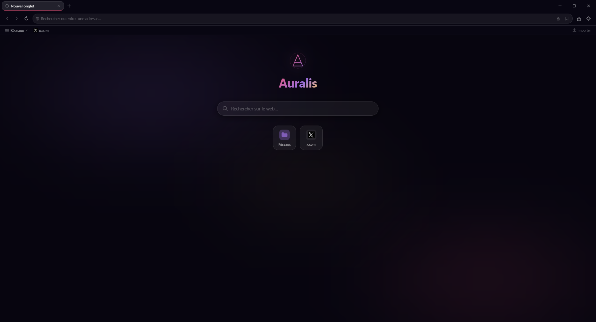

Ultra léger, propulsé par Tauri & Rust. Aucun Electron. Glassmorphism, thèmes, favoris avec dossiers.

Auralis combine performance native et esthétique soignée. Chaque détail est pensé.
Démarrage en moins de 500 ms. WebView2 système. Empreinte mémoire minimale.
3 thèmes : Aurora, Brume (beige chaud), Minuit. Glassmorphism et dégradés aurora.
Arborescence complète. Glisser-déposer. Import Chrome & Firefox avec hiérarchie.
Chiffrement AES-GCM local. Jamais transmis nulle part.
Pages dédiées : auralis::settings/favoris, /historique, /cache. Appliqués en direct.
DuckDuckGo, Google, Brave, Startpage. Interface FR/EN à la volée.
Auralis est conçu pour être magnifique dès l'installation.
Installation propre, désinstallation propre. Aucune donnée partagée.